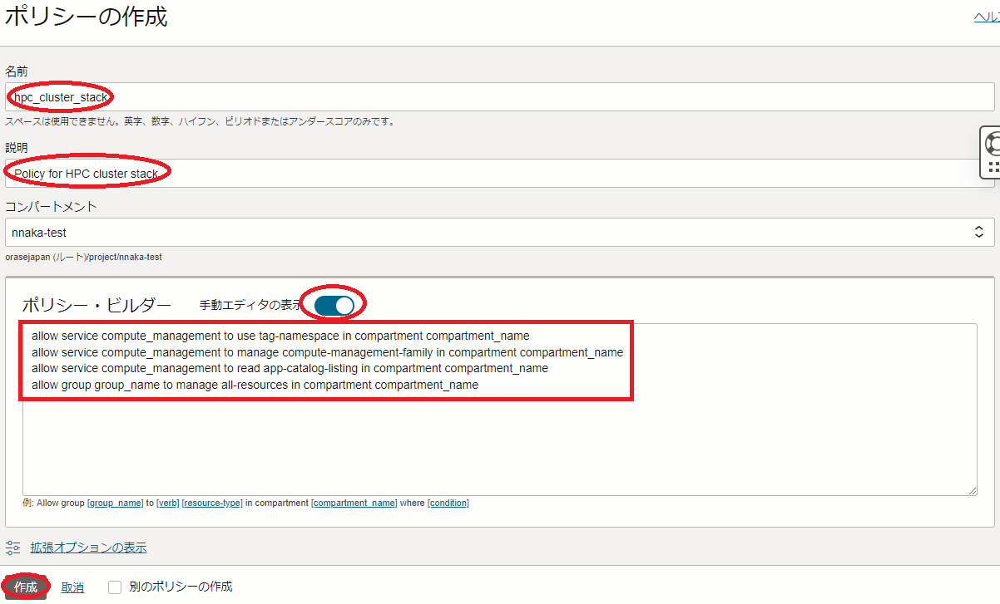
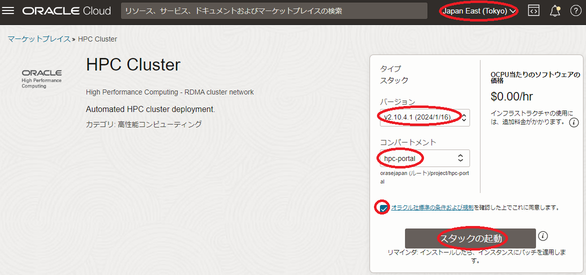
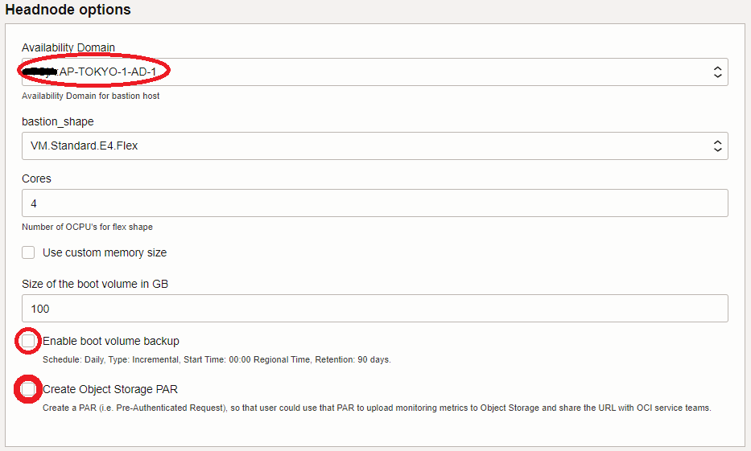
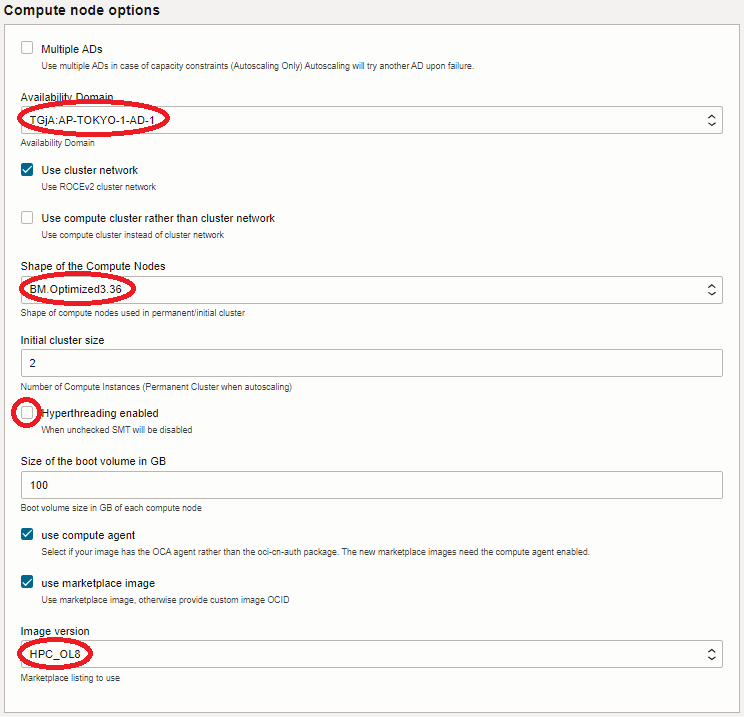
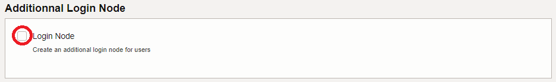
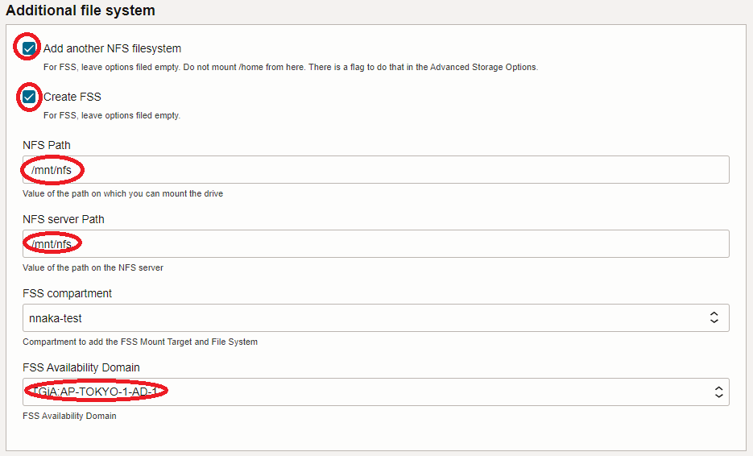
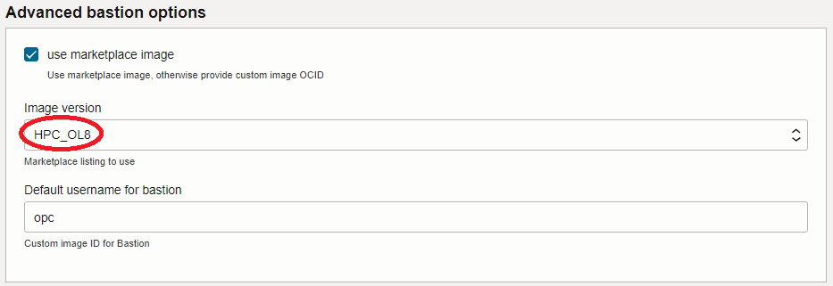
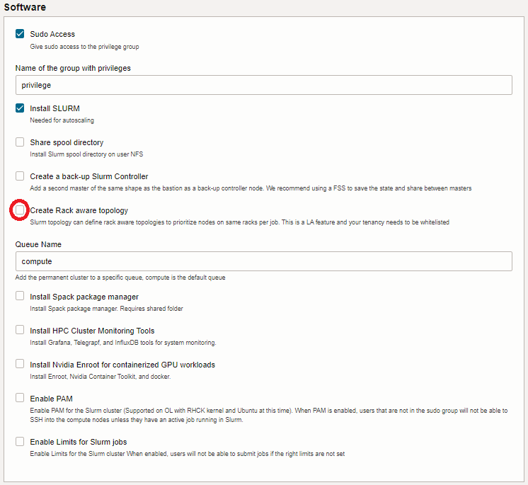
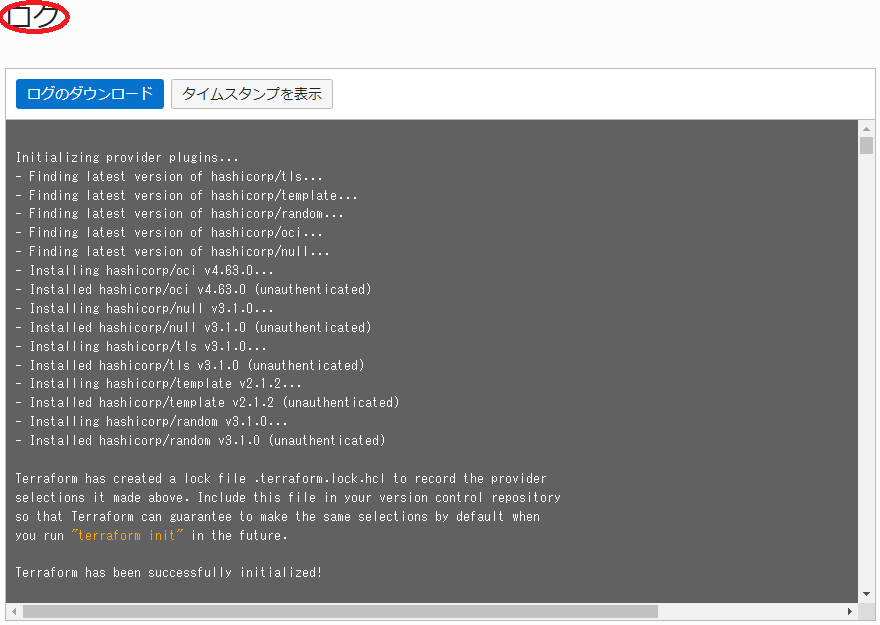

Oracle Cloud Infrastructure（以降OCIと記載）は、仮想化オーバーヘッドの無いHPC用途に特化したベアメタルシェイプと、これらを高速・低遅延で接続するインターコネクトネットワークサービスの クラスタ・ネットワーク を提供しており、HPCワークロードを実行するHPCクラスタを構築するには最適なクラウドサービスです。
このチュートリアルは、 マーケットプレイス から無償で利用可能な HPCクラスタスタック を利用し、以下構成の典型的なHPCクラスタを構築します。
- 計算ノード： HPCワークロード向けIntel Ice Lakeプロセッサ搭載ベアメタルシェイプの BM.Optimized3.36
- インターコネクトネットワーク: クラスタ・ネットワーク （ノード当たり100 Gbps x 1）
- インターネットからSSH接続可能なBastionノード
- OS: Oracle Linux 8.8
- ジョブスケジューラ: Slurm
- クラスタ内ホームディレクトリ共有： ファイル・ストレージ
- クラスタ内ユーザ統合管理： LDAP
またこのチュートリアルでは、構築したHPCクラスタに対して以下を実施し、その手順を解説します。
- Intel MPI Benchmark によるインターコネクト性能確認
- クラスタ構築後のワークロード増加を想定した計算ノード追加
- ハードウェア障害の発生を想定した特定計算ノードの入れ替え
本チュートリアルで使用する HPCクラスタスタック は、通常であれば数日かかるHPCクラスタ構築作業を、OCIコンソールのGUIから10項目程度のメニューを選択するだけで実施することを可能にします。
所要時間 : 約1時間
前提条件 : HPCクラスタを収容する コンパートメント ( ルート・コンパートメント でもOKです)が作成されていること。
注意 : 本コンテンツ内の画面ショットは、現在のOCIコンソール画面と異なっている場合があります。
また使用する HPCクラスタスタック のバージョンが異なる場合も、画面ショットが異なる場合があります。
1. HPCクラスタ作成
1-0. 概要
本章は、 HPCクラスタスタック を利用し、HPCクラスタを作成します。
HPCクラスタスタック は、 リソース・マネージャ に作成する スタック からHPCクラスタを作成するため、これを許可する IAMポリシー が必要です。
よって本章では、以下の手順でHPCクラスタを作成します。
- IAMポリシー 作成
- スタック の作成
- スタック の計画
- スタック の適用
1-1. IAMポリシー作成
本章は、 リソース・マネージャ に作成する スタック からHPCクラスタを作成するための IAMポリシー を作成します。
-
OCIコンソールにログインし、 アイデンティティとセキュリティ → ポリシー とメニューを辿ります。
-
表示される以下 xxxxコンパートメント内のポリシー 画面で、 ポリシーの作成 ボタンをクリックします。
この際、 コンパートメント プルダウンメニューがHPCクラスタを作成する コンパートメント と異なる場合は、これを修正します。
-
表示される以下 ポリシーの作成 画面で、各フィールドに以下の情報を入力し 作成 ボタンをクリックします。なお、ここに記載のないフィールドは、デフォルトのままとします。
- 名前 ： IAMポリシー に付与する名前
- 説明 ： IAMポリシー に付与する説明（用途等）
-
ポリシー・ビルダー ： 作成する IAMポリシー を指定する以下構文
（ 手動エディタの表示 ボタンをクリックして表示）allow service compute_management to use tag-namespace in compartment compartment_name allow service compute_management to manage compute-management-family in compartment compartment_name allow service compute_management to read app-catalog-listing in compartment compartment_name allow group group_name to manage all-resources in compartment compartment_name※1）コンパートメント 名は、自身のものに置き換えます。
※2）4行目の グループ 名は、自身のものに置き換えます。

1-2. スタックの作成
本章は、 HPCクラスタスタック を基に、前述のHPCクラスタを構築するための スタック を作成します。
このチュートリアルで使用する HPCクラスタスタック は、バージョン 2.10.4.1 です。
-
以下 マーケットプレイス の HPCクラスタスタック のページにアクセスします。
https://cloud.oracle.com/marketplace/application/67628143/
OCIコンソールへのログイン画面が表示された場合（まだログインしていない場合）、ログインを完了します。
- 表示される以下画面で、以下情報の入力と オラクル社標準の条件および規則を確認した上でこれに同意します。 チェックボックスをチェックし、 スタックの起動 ボタンをクリックします。
- リージョン : HPCクラスタをデプロイする リージョン
- バージョン : v2.10.4.1
- コンパートメント : スタック を作成する コンパートメント

- 表示される以下 スタック情報 画面で、各フィールドに以下の情報を入力し、下部の 次 ボタンをクリックします。
- 名前 : スタックに付与する名前（任意）
- 説明 : スタックに付与する説明（任意）

-
表示される 変数の構成 画面で、各フィールドに以下の情報を入力し、下部の 次 ボタンをクリックします。
なお、ここに記載のないフィールドは、デフォルトのままとします。4.1 Cluster configuration
- Public SSH key : Bastionノードのログインに使用するSSH秘密鍵に対応する公開鍵
（公開鍵ファイルのアップロード（ SSHキー・ファイルの選択 ）と公開鍵のフィールドへの貼り付け（ SSHキーの貼付け ）が選択可能）

4.2 Headnode options
- Availability Domain : Bastionノードをデプロイする 可用性ドメイン
- Enable boot volume backup : チェックオフ
- Create Object Storage PAR : チェックオフ

4.3 Compute node options
- Availability Domain : 計算ノードをデプロイする 可用性ドメイン
- Shape of the Compute Nodes : BM.Optimized3.36
- Hyperthreading enabled : チェックオフ
- Image version : HPC_OL8（※3）
※3）このイメージの詳細は、 OCI HPCテクニカルTips集 の クラスタネットワーキングイメージの選び方 の 2-2. HPCクラスタスタックを使用する方法 を参照ください。

4.4 Additional Login Node
- Login Node : チェックオフ

4.5 Additional file system
- Add another NFS filesystem : チェック
- Create FSS : チェック
- NFS Path : /mnt/nfs（※4）
- NFS server Path : /mnt/nfs（※4）
- FSS Availability Domain : ファイル・ストレージ をデプロイする 可用性ドメイン
※4）ここで指定するパスは、 ファイル・ストレージ 領域に作成するLDAPユーザのホームディレクトリを格納するディレクトリを指定しています。例えばユーザ名 user_name のLDAPユーザのホームディレクトリは、 /mnt/nfs/home/user_name となります。

4.6 Advanced bastion options
- Image version : HPC_OL8

4.7 Advanced storage options
- Show advanced storage options : チェック
- Shared NFS scratch space from NVME or Block volume : チェックオフ（※5）
- Redundancy : チェックオフ
※5）計算ノードのNVMe SSDローカルディスク領域をNFS共有するかの指定で、本チュートリアルでは共有しません。

4.8 Software
- Create Rack aware topology : チェックオフ

- Public SSH key : Bastionノードのログインに使用するSSH秘密鍵に対応する公開鍵
-
表示される 確認 画面で、これまでの設定項目が意図したものになっているかを確認し、以下 作成されたスタックで適用を実行しますか。 フィールドの 適用の実行 をチェックオフし、下部の 作成 ボタンをクリックします。

ここで 適用の実行 をチェックした場合、 作成 ボタンのクリックと同時に スタック の適用が開始され、HPCクラスタのデプロイが始まりますが、このチュートリアルでは スタック の計画を実行してから適用を行います。
これで、以下画面のとおりHPCクラスタを作成する スタック が作成されました。

1-3. スタックの計画
本章は、完成した スタック を計画し、どのようなリソースがデプロイされるか確認します。
-
作成したスタックの以下 スタックの詳細 画面で、 計画 ボタンをクリックします。
-
表示される以下 計画 サイドバーで、 計画 ボタンをクリックします。

-
表示される以下 ジョブの詳細 ウィンドウで、左上のステータスが 受入れ済 → 進行中 → 成功 と遷移すれば、 スタック の計画が終了しています。

表示される以下 ログ フィールドで、適用時にデプロイされるリソースを確認します。

1-4. スタックの適用
本章は、計画で作成されるリソースに問題が無いことを確認した スタック に対し、適用を行いHPCクラスタをデプロイします。
-
以下 スタックの詳細 画面で、 適用 ボタンをクリックします。

-
表示される以下 適用 サイドバーで、 適用 ボタンをクリックします。

-
表示される以下 ジョブ詳細 ウィンドウで、左上のステータスが 受入れ済 → 進行中 と遷移すれば、 スタック の適用が実施されています。

表示される以下 ログ フィールドで、リソースのデプロイ状況を確認します。
この適用が完了するまでの所要時間は、計算ノードのノード数が2ノードの場合で20分程度です。
ステータスが 成功 となれば、HPCクラスタのデプロイが完了しています。
2. HPCクラスタ確認
本章は、デプロイされたHPCクラスタにログインし、環境を確認します。
-
Bastionノードログイン
Bastionノードへのログインは、 スタック 適用時の以下 ログ フィールドの最後に表示されているBastionノードのIPアドレスを使用し、インターネットを介してopcユーザでSSHログインします。
このSSH接続では、 スタック に指定したSSH公開鍵に対応する秘密鍵を使用します。
$ ssh -i path_to_ssh_secret_key opc@123.456.789.123 -
Bastionノードファイルシステム確認
Bastionノードは、以下のように ファイルストレージ の/mnt/nfsがマウントされています。この/mnt/nfsは、HPCクラスタ内で共有するLDAPユーザのホームディレクトリに使用します。
$ df -h /mnt/nfs Filesystem Size Used Avail Use% Mounted on FSS_ip:/mnt/home 8.0E 0 8.0E 0% /mnt/home $ -
計算ノードログイン
計算ノードは、プライベートサブネットに接続されており、インターネット経由ログインすることが出来ないため、Bastionノードを経由してログインします。
計算ノードのホスト名は、Bastionノードの /etc/opt/oci-hpc ディレクトリ以下のファイルに格納されており、 hostfile.tcp と hostfile.rdma がそれぞれプライベートサブネット接続と クラスタ・ネットワーク サブネット接続に使用するIPアドレスに対応するホスト名です。
このため、Bastionノードから計算ノードへのログインは、 hostfile.tcp ファイルに格納されているホスト名を使用し、opcユーザでSSHログインします。$ cat /etc/opt/oci-hpc/hostfile.tcp compute-permanent-node-392 compute-permanent-node-170 $ ssh compute-permanent-node-392 Activate the web console with: systemctl enable --now cockpit.socket Last login: Mon Dec 11 06:31:17 2023 from 172.16.0.187 $ -
pdsh インストール・セットアップ
以降実施する計算ノードの確認作業を pdsh を使用して効率よく進めるため、以下コマンドをBastionノードのopcユーザで実行し、 pdsh をインストール・セットアップします。
pdsh の詳細は、 OCI HPCテクニカルTips集 の pdshで効率的にクラスタ管理オペレーションを実行 を参照ください。
なおこの手順は、該当する手順を全ての計算ノードで実施する場合、必要ありません。$ sudo dnf install -y pdsh-rcmd-ssh $ echo "export PDSH_RCMD_TYPE=ssh" | tee -a ~/.bash_profile $ source ~/.bash_profile -
計算ノードファイルシステム確認
以下コマンドをBastionノードのopcユーザで実行し、NVMe SSDローカルディスク領域が /mnt/localdisk にマウントされていることを確認します。
$ pdsh -w ^/etc/opt/oci-hpc/hostfile.tcp 'df -h /mnt/localdisk' | dshbak -c ---------------- compute-permanent-node-[545,936] ---------------- Filesystem Size Used Avail Use% Mounted on /dev/nvme0n1p1 3.5T 25G 3.5T 1% /mnt/localdisk $次に、以下コマンドをBastionノードのopcユーザで実行し、Basionノードの /home と /export/cluster が全ての計算ノードでマウントされていることを確認します。
これらの領域は、Bastionノードの /home をopcユーザのホームディレクトリ領域に、 /export/cluster をHPCクラスタ内で共有する任意のデータを格納する領域に、それぞれ使用します。$ pdsh -w ^/etc/opt/oci-hpc/hostfile.tcp 'df -h /home /nfs/cluster' | dshbak -c ---------------- compute-permanent-node-[545,936] ---------------- Filesystem Size Used Avail Use% Mounted on 172.16.0.208:/home 89G 20G 69G 23% /home 172.16.0.208:/export/cluster 89G 20G 69G 23% /nfs/cluster $次に、以下コマンドをBastionノードのopcユーザで実行し、 ファイルストレージ の /mnt/nfs が全ての計算ノードでマウントされていることを確認します。
$ pdsh -w ^/etc/opt/oci-hpc/hostfile.tcp 'df -h /mnt/nfs' | dshbak -c ---------------- compute-permanent-node-[545,936] ---------------- Filesystem Size Used Avail Use% Mounted on FSS_ip:/mnt/nfs 8.0E 21M 8.0E 1% /mnt/nfs $
3. LDAPユーザ作成
本章は、 HPCクラスタスタック が作成したLDAP統合ユーザ管理環境にLDAPユーザを作成し、このユーザでインターネットからBastionノードにSSHログイン出来ることを確認します。
このLDAP統合ユーザ管理環境は、BastionノードがLDAPサーバ兼クライアントで計算ノードがLDAPクライアントです。
-
LDAPユーザ作成
LDAPサーバであるBastionノードは、LDAPユーザ管理のためのclusterコマンドが用意されています。
このコマンドは、作成するユーザのホームディレクトリを /home 以下とするため、本環境のLDAPユーザ用ホームディレクトリである ファイル・ストレージ の /mnt/nfs/home 以下に作成するよう修正する必要があります。このため、以下コマンドをBastionノードのopcユーザで実行します。
$ sudo sed -i 's/\/home\//\/mnt\/nfs\/home\//g' /usr/bin/cluster次に、以下コマンドをBastionノードのopcユーザで実行し、LDAPユーザを作成します。
なおこのユーザは、この後の稼働確認に使用します。$ cluster user add user_name Password: <- Password for user_name Repeat for confirmation: <- Password for user_name Full Name: full_name <- Full name for user_name Creating group $ id user_name uid=10001(user_name) gid=9876(privilege) groups=9876(privilege) $ここで指定するパスワードは、HPCクラスタ内の認証にパスワード認証を使用しないため、任意のパスワードで構いません。
次に、このユーザがインターネットからBastionノードにSSHログインする際に使用するSSH秘密鍵に対応する公開鍵を登録するため、以下コマンドをBastionノードのopcユーザで実行します。
$ echo 'public_key_for_user_name' | sudo tee -a ~user_name/.ssh/authorized_keys -
LDAPユーザログイン
先に作成したLDAPユーザを使用したインターネットを介したBastionノードへのログインは、以下コマンドでSSHログインします。
このSSH接続では、先のLDAPユーザ作成で指定したSSH公開鍵に対応する秘密鍵を使用します。
$ ssh -i path_to_ssh_secret_key_for_user_name user_name@123.456.789.123
4. MPIプログラム実行（2ノード編）
4-0. 概要
本章は、先に作成したLDAPユーザを使ってMPIプログラムを Slurm を介してバッチジョブとして投入し、構築したHPCクラスタのインターコネクト性能を Intel MPI Benchmark で確認します。
ここでは、2ノードのPing-Pong性能を計測しており、以下性能が出ています。
- 帯域：12.2 GB/s（インタフェース物理帯域100 Gbpsに対し97.6 Gbpsを計測）
- レイテンシ：1.7 μs
4-1. ジョブスクリプト作成
BastionノードのLDAPユーザで、以下のジョブスクリプトをファイル名 pingpong.sh で作成します。
#!/bin/bash
#SBATCH -p compute
#SBATCH -n 2
#SBATCH -N 2
#SBATCH -J ping_pong
#SBATCH -o stdout.%J
#SBATCH -e stderr.%J
export UCX_NET_DEVICES=mlx5_2:1
srun --mpi=pmix /usr/mpi/gcc/openmpi-4.1.5a1/tests/imb/IMB-MPI1 -msglog 27:28 pingpong
4-2. ジョブ投入
BastionノードのLDAPユーザで以下コマンドを実行し、作成したジョブスクリプトを Slurm に投入します。
$ sbatch pingpong.sh
Submitted batch job 1
$
4-3. ジョブ結果確認
BastionノードのLDAPユーザで以下コマンドを実行し、ジョブ完了を確認した後、その出力結果を確認します。
$ squeue
JOBID PARTITION NAME USER ST TIME NODES NODELIST(REASON)
$ cat stdout.1
#------------------------------------------------------------
# Intel (R) MPI Benchmarks 2018, MPI-1 part
#------------------------------------------------------------
# Date : Mon Dec 11 07:00:24 2023
# Machine : x86_64
# System : Linux
# Release : 4.18.0-425.13.1.el8_7.x86_64
# Version : #1 SMP Tue Feb 21 15:09:05 PST 2023
# MPI Version : 3.1
# MPI Thread Environment:
# Calling sequence was:
# /usr/mpi/gcc/openmpi-4.1.2a1/tests/imb/IMB-MPI1 -msglog 27:28 pingpong
# Minimum message length in bytes: 0
# Maximum message length in bytes: 268435456
#
# MPI_Datatype : MPI_BYTE
# MPI_Datatype for reductions : MPI_FLOAT
# MPI_Op : MPI_SUM
#
#
# List of Benchmarks to run:
# PingPong
#---------------------------------------------------
# Benchmarking PingPong
# #processes = 2
#---------------------------------------------------
#bytes #repetitions t[usec] Mbytes/sec
0 1000 1.68 0.00
134217728 1 10971.08 12233.78
268435456 1 21937.28 12236.50
# All processes entering MPI_Finalize
5. 計算ノード追加
本章は、構築した2ノードクラスタに計算ノードを2ノード追加して4ノードクラスタに拡張します。
この計算ノード追加は、OCIコンソールから実施する追加2ノード分のOCIリソース構築フェーズと、Bastionノードのコマンドラインから実施する Ansible のOSレベルカスタマイズフェーズを、個別に実行することで行います。
OCIリソース構築フェーズは、 OCI HPCテクニカルTips集 の 計算/GPUノードの追加・削除・入れ替え方法 の 2. ノード数を増やす の手順を実施します。
OCIリソース構築フェーズが終了した段階は、追加した計算ノード用インスタンスのデプロイが完了し既存 クラスタ・ネットワーク に物理的に接続されOSが起動した状態で、未だ Slurm のジョブを実行可能な状態になっていません。
次に、 Ansible によるOSレベルカスタマイズを行います。
-
Bastionノードの Ansible インベントリファイル /etc/ansible/hosts の compute_configured セクションの最後に、追加された計算ノードのホスト名とIPアドレスの記述を以下のように追加します。
[compute_configured] inst-gxosv-relevant-owl ansible_host=172.16.6.51 ansible_user=opc role=compute inst-mdu0w-relevant-owl ansible_host=172.16.6.187 ansible_user=opc role=compute # # Two nodes added from here inst-yzgqv-relevant-owl ansible_host=172.16.5.203 ansible_user=opc role=compute inst-jow40-relevant-owl ansible_host=172.16.5.11 ansible_user=opc role=compute # -
本ステップで実行するコマンドは、Bastionノードから計算ノードへのSSH接続を使用するため、全ての計算ノードがSSH接続可能な状態まで起動していることを確認します。
Bastionノードのopcユーザで以下コマンドを実行し、追加された計算ノードに対する Ansible のOSレベルカスタマイズを起動、最後の PLAY RECAP フィールドの出力で failed や unreachable の項目が無いことで、正常に終了していることを確認します。$ ANSIBLE_HOST_KEY_CHECKING=False ansible-playbook /opt/oci-hpc/playbooks/site.yml : : : PLAY RECAP ********************************************************************************************** inst-gxosv-relevant-owl : ok=86 changed=16 unreachable=0 failed=0 skipped=59 rescued=0 ignored=0 inst-jow40-relevant-owl : ok=85 changed=51 unreachable=0 failed=0 skipped=56 rescued=0 ignored=0 inst-mdu0w-relevant-owl : ok=83 changed=13 unreachable=0 failed=0 skipped=57 rescued=0 ignored=0 inst-yzgqv-relevant-owl : ok=85 changed=51 unreachable=0 failed=0 skipped=56 rescued=0 ignored=0 relevant-owl-bastion : ok=112 changed=21 unreachable=0 failed=0 skipped=115 rescued=0 ignored=0 $
以上で、 Ansible のOSレベルカスタマイズフェーズは完了し、4ノードのHPCクラスタが利用可能になります。
6. MPIプログラム実行（4ノード編）
6-0. 概要
本章は、先に作成したLDAPユーザを使ってMPIプログラムを Slurm を介してバッチジョブとして投入し、追加後の4ノードHPCクラスタのインターコネクト性能を Intel MPI Benchmark で確認します。
ここでは、4ノードのAlltoall性能を計測しています。
6-1. ジョブスクリプト作成
BastionノードのLDAPユーザで、以下のジョブスクリプトをファイル名 alltoall.sh で作成します。
#!/bin/bash
#SBATCH -p compute
#SBATCH -n 4
#SBATCH -N 4
#SBATCH -J all_to_all
#SBATCH -o stdout.%J
#SBATCH -e stderr.%J
export UCX_NET_DEVICES=mlx5_2:1
srun --mpi=pmix /usr/mpi/gcc/openmpi-4.1.5a1/tests/imb/IMB-MPI1 -mem 4 alltoall
6-2. ジョブ投入
BastionノードのLDAPユーザで以下コマンドを実行し、作成したジョブスクリプトを Slurm に投入します。
$ sbatch alltoall.sh
Submitted batch job 2
$
6-3. ジョブ結果確認
BastionノードのLDAPユーザで以下コマンドを実行し、ジョブ完了を確認した後、その出力結果を確認します。
$ squeue
JOBID PARTITION NAME USER ST TIME NODES NODELIST(REASON)
$ cat stdout.2
#----------------------------------------------------------------
# Intel(R) MPI Benchmarks 2021.2, MPI-1 part
#----------------------------------------------------------------
# Date : Thu Mar 24 04:29:15 2022
# Machine : x86_64
# System : Linux
# Release : 3.10.0-1160.25.1.el7.x86_64
# Version : #1 SMP Tue Apr 27 15:52:10 PDT 2021
# MPI Version : 3.1
# MPI Thread Environment:
# Calling sequence was:
# IMB-MPI1 -mem 4 Alltoall
# Minimum message length in bytes: 0
# Maximum message length in bytes: 4194304
#
# MPI_Datatype : MPI_BYTE
# MPI_Datatype for reductions : MPI_FLOAT
# MPI_Op : MPI_SUM
#
#
# List of Benchmarks to run:
# Alltoall
#----------------------------------------------------------------
# Benchmarking Alltoall
# #processes = 2
# ( 2 additional processes waiting in MPI_Barrier)
#----------------------------------------------------------------
#bytes #repetitions t_min[usec] t_max[usec] t_avg[usec]
0 1000 0.07 0.07 0.07
1 1000 0.65 6.07 3.36
2 1000 0.82 6.21 3.51
4 1000 0.63 6.11 3.37
8 1000 0.68 6.05 3.37
16 1000 0.66 6.15 3.41
32 1000 0.67 6.15 3.41
64 1000 0.75 6.29 3.52
128 1000 0.79 6.37 3.58
256 1000 0.97 6.69 3.83
512 1000 1.03 6.79 3.91
1024 1000 1.81 6.31 4.06
2048 1000 7.22 7.25 7.24
4096 1000 7.90 7.92 7.91
8192 1000 8.50 8.55 8.53
16384 1000 9.82 9.87 9.85
32768 1000 13.08 13.09 13.09
65536 640 23.10 23.10 23.10
131072 320 30.03 30.50 30.27
262144 160 43.79 43.85 43.82
524288 80 71.72 71.86 71.79
1048576 40 272.44 277.41 274.93
2097152 20 520.28 526.08 523.18
4194304 10 1002.88 1007.84 1005.36
#----------------------------------------------------------------
# Benchmarking Alltoall
# #processes = 4
#----------------------------------------------------------------
#bytes #repetitions t_min[usec] t_max[usec] t_avg[usec]
0 1000 0.08 0.08 0.08
1 1000 3.77 4.16 3.97
2 1000 3.62 4.32 3.97
4 1000 3.54 4.40 3.98
8 1000 3.55 4.40 3.98
16 1000 3.60 4.35 3.98
32 1000 3.35 4.77 4.06
64 1000 3.68 4.61 4.16
128 1000 4.17 4.23 4.20
256 1000 4.66 5.13 4.87
512 1000 4.45 5.63 5.02
1024 1000 4.93 5.58 5.23
2048 1000 7.70 7.76 7.74
4096 1000 8.98 9.09 9.06
8192 1000 11.02 11.40 11.23
16384 1000 12.88 13.61 13.31
32768 1000 20.15 21.55 20.79
65536 640 32.60 34.18 33.04
131072 320 53.61 58.48 55.11
262144 160 99.36 106.92 102.02
524288 80 185.47 206.04 194.67
1048576 40 406.18 445.43 425.45
2097152 20 807.91 919.29 863.22
4194304 10 1588.80 1787.67 1688.05
# All processes entering MPI_Finalize
$
7. 計算ノード入れ替え
本章は、構築した4ノードクラスタのうち1ノードにハードウェア障害等が発生した場合を想定し、この計算ノードを新たな計算ノードに入れ替えます。
この計算ノード入れ替えは、OCIコンソールから実施するOCIリソースレベルの計算ノード入れ替えフェーズと、Bastionノードのコマンドラインから実施する Ansible によるOSレベルの新計算ノードカスタマイズフェーズを、個別に実行することで行います。
OCIリソースレベルの計算ノード入れ替えフェーズは、 OCI HPCテクニカルTips集 の 計算/GPUノードの追加・削除・入れ替え方法 の 3. ノードを置き換える の手順を実施します。
OCIリソースレベルの計算ノード入れ替えフェーズが終了した段階は、置き換え後の新計算ノード用インスタンスのデプロイが完了し既存 クラスタ・ネットワーク に物理的に接続されOSが起動した状態で、未だ Slurm のジョブを実行可能な状態になっていません。
次に、 Ansible によるOSレベルカスタマイズを行います。
-
Bastionノードの Ansible インベントリファイル /etc/ansible/hosts の compute_configured セクションで、置き換えられた計算ノードのホスト名とIPアドレスの記述を置き換えた計算ノードのものに書き換えます。
[compute_configured] inst-gxosv-relevant-owl ansible_host=172.16.6.51 ansible_user=opc role=compute inst-mdu0w-relevant-owl ansible_host=172.16.6.187 ansible_user=opc role=compute # # Two nodes added from here inst-yzgqv-relevant-owl ansible_host=172.16.5.203 ansible_user=opc role=compute # # The following two compute nodes were replaced each other due to haradware failure #inst-jow40-relevant-owl ansible_host=172.16.5.11 ansible_user=opc role=compute inst-sz0pd-relevant-owl ansible_host=172.16.5.15 ansible_user=opc role=compute # # -
本ステップで実行するコマンドは、Bastionノードから計算ノードへのSSH接続を使用するため、置き換えた計算ノードがSSH接続可能な状態まで起動していることを確認します。
Bastionノードのopcユーザで以下コマンドを実行し、置き換えた計算ノードに対する Ansible のOSレベルカスタマイズを起動、最後の PLAY RECAP フィールドの出力で failed や unreachable の項目が無いことで、正常に終了していることを確認します。$ ANSIBLE_HOST_KEY_CHECKING=False ansible-playbook /opt/oci-hpc/playbooks/site.yml : : : PLAY RECAP ********************************************************************************************** inst-gxosv-relevant-owl : ok=98 changed=14 unreachable=0 failed=0 skipped=94 rescued=0 ignored=0 inst-yzgqv-relevant-owl : ok=108 changed=20 unreachable=0 failed=0 skipped=96 rescued=0 ignored=0 inst-mdu0w-relevant-owl : ok=98 changed=13 unreachable=0 failed=0 skipped=94 rescued=0 ignored=0 inst-sz0pd-relevant-owl : ok=102 changed=68 unreachable=0 failed=0 skipped=93 rescued=0 ignored=0 relevant-owl-bastion : ok=112 changed=22 unreachable=0 failed=0 skipped=115 rescued=0 ignored=0 $
以上で、 Ansible のOSレベルカスタマイズフェーズは完了し、計算ノードの置き換えは完了です。
再度 6. MPIプログラム実行（4ノード編） に従い Intel MPI Benchmark を実行し、インターコネクト性能が十分出ていることを確認します。
8. HPCクラスタ削除
本章は、 スタック を破棄することで、構築したHPCクラスタを削除します。
以降の手順は、本チュートリアルで作成したOCI上のリソースをすべて削除するため、 LDAPユーザのホームディレクトリ用途で作成したファイル・ストレージに格納されているデータが全て消失 します。
-
以下 スタックの詳細 画面で、 破棄 ボタンをクリックします。

-
表示される以下 破棄 サイドバーで、 破棄 ボタンをクリックします。

-
表示される以下 ジョブ詳細 ウィンドウで、左上のステータスが 受入れ済 → 進行中 と遷移すれば、 スタック の破棄が実施されています。

表示される以下 ログ フィールドで、リソースの削除状況を確認します。
この破棄が完了するまでの所要時間は、計算ノードのノード数が2ノードの場合で5分程度です。
ステータスが 成功 となれば、HPCクラスタの削除が完了しています。
これで、このチュートリアルは終了です。